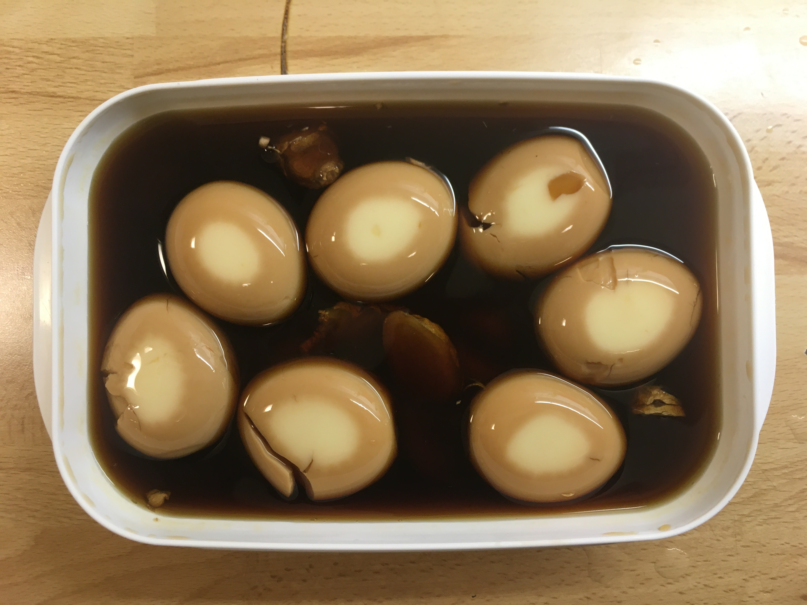

Soy Eggs
Ingredients
- 1 cup of cooking alcohol
- 1 cup of mirin
- 1 cup of soy sause
- 2 cups of water
- 5 cloves of gerlic
- few slices of ginger
- 6 eggs
Steps
- Put everything together except eggs in a pot and boil it.
- Pour the sauce in a container to keep it.
- Boil water, add some salt, and put the eggs in when the water is boiled.
- Keep stirring the eggs for 6 mins so the egg yolk will be in the middle of the egg.
- Take out the eggs and cool them down with cold water.
- Peel the eggs and put them in the sauce.
- Keep the container in the fridge for 24 hours, flip the eggs after the first 12 hours so all the eggs will have the same color.
